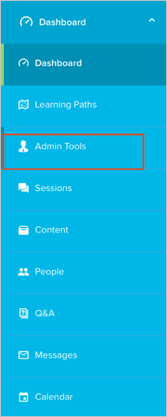
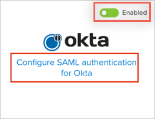
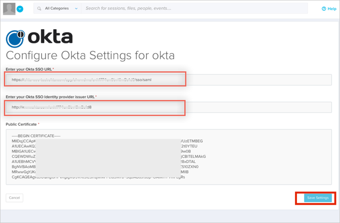

Once you have created your organization at showdme.net, select Admin Tools from the top right menu:

Select Authentication from the Admin Tools menu:

Click the Enabled switch for Okta, then click Configure SAML authentication for Okta:

Enter the following:
Okta SSO URL: Copy and paste the following:
Sign into the Okta Admin Dashboard to generate this variable.
Okta SSO identity provider issuer URL: Copy and paste the following:
Sign into the Okta Admin Dashboard to generate this variable.
Public Certificate: Copy and paste the following (PEM Text Format):
Sign into the Okta Admin Dashboard to generate this variable.
Click Save Settings.

Done!
Notes:
IdP-initiated flows and SP-initiated flows are supported.
Just in Time (JIT) provisioning is not supported.